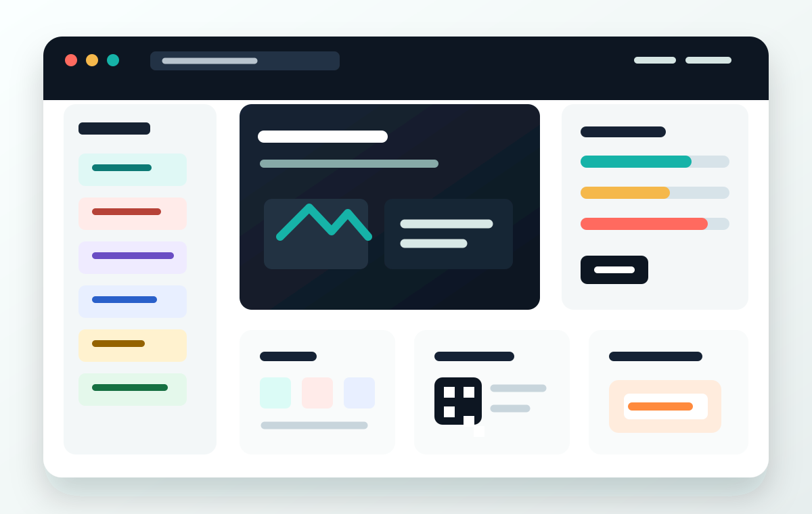

Drop files
Batch uploads keep image sets, PDFs, videos, resumes, QR assets, and screenshots grouped by project.
Seven everyday file workflows
A polished online workspace for compressing, cleaning, converting, exporting, and sharing files without bouncing between separate apps.

Tool library
Each tool is designed around the same simple rhythm: drop files, tune output, preview the result, and export what you need.
One pattern
Batch uploads keep image sets, PDFs, videos, resumes, QR assets, and screenshots grouped by project.
Purpose-built controls expose quality, dimensions, background color, page ranges, frame size, and export type.
Before/after panels and file queues make final checks simple before downloading ZIP, PNG, SVG, PDF, GIF, or MP4.
Browser-first foundation
The landing page frames FileForge as a client-first toolkit: lightweight operations happen in-browser, while heavier AI and video tasks can be routed to dedicated workers later.
Ready for the next build step